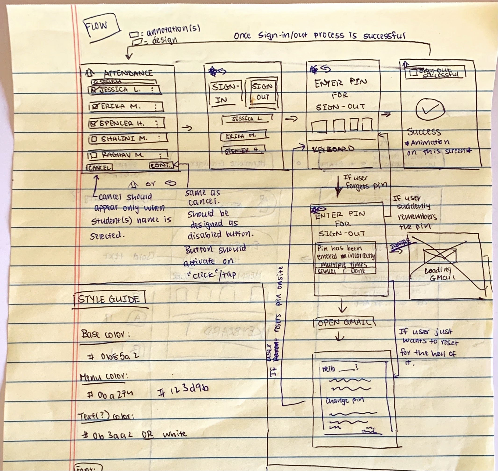
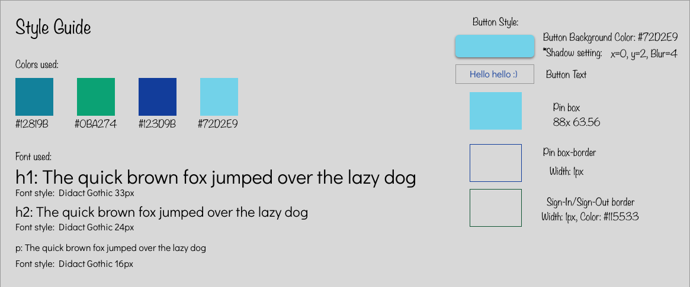

Tingr is an application that allows daycare centers in California to organize the numerous forms related to child care that are provided by the state. Tingr also contains features that allow parents and their child's instructors to connect.

What would be the most optimal way to allow parents to sign-in/out a child from their daycare center
My process for this project had a major emphasis on research and design. I needed to understand the typical flow for signing-in and out children from any daycare center.
Before I could brainstrom ideas as to how I wanted to design the high-fidelity screens, I needed to understand how daycare centers operated. I looked at different daycare centers across California and other states to get a better understanding of the following situations:
Understanding this process was essential. Otherwise I would have designed these screens without much data. As Mario Maruffi, a UX/UI Designer on LinkedIn once said, "Designing with no data is like designing in the dark". My project manager already had a user flow in mind when I was brought on to the team. He wanted the parent to enter a 4-digit pin that would allow the parent to sign-in/out their child. I created a fake class with approximately 10 students and 1 teacher named Erika Tapia. I had a student (Hermione Granger) be the child that needed to be signed in/out.
Once I was satisfied with my research, I started to sketch out wireframes so I could figure out how to organize the content. 
Once I finalized how to organize the screens, I worked on creating a style guide.
I converted all of the sketches into final designs using Sketch.
This was a project that taught me how to effectively process feedback. When I got feedback from the stakeholder about my progress, there were a few times where I thought he absolutely hated my design. However, as I started to work on implementing the feedback, I realized that there was a bigger lesson that I needed to understand. Feedback is not meant to sound like criticism. Rather, it allows designers such as myself to grow as a person and ultimately create even better designs.